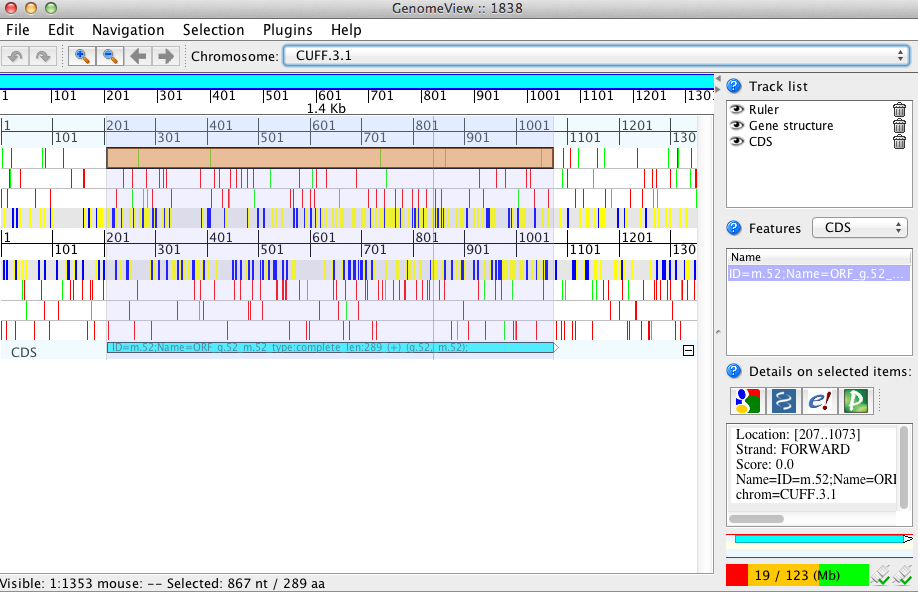
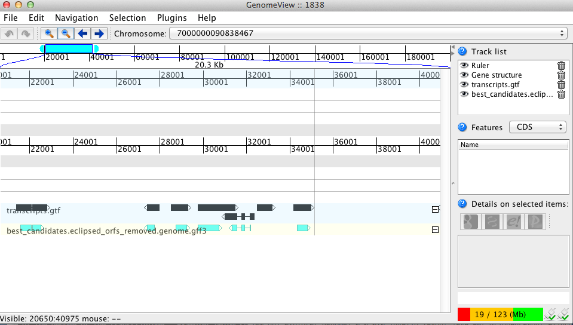

transcripts_to_best_scoring_ORFs.pl -t target_transcripts.fasta
TransDecoder identifies candidate coding regions within transcript sequences, such as those generated by de novo RNA-Seq transcript assembly using Trinity, or constructed based on RNA-Seq alignments to the genome using Tophat and Cufflinks.
TransDecoder identifies likely coding sequences based on the following criteria:
a minimum length open reading frame (ORF) is found in a transcript sequence
a log-likelihood score similar to what is computed by the GeneID software is > 0.
the above coding score is greatest when the ORF is scored in the 1st reading frame as compared to scores in the other 5 reading frames.
if a candidate ORF is found fully encapsulated by the coordinates of another candidate ORF, the longer one is reported. However, a single transcript can report multiple ORFs (allowing for operons, chimeras, etc).
optional the putative peptide has a match to a Pfam domain above the noise cutoff score.
The software was written and is maintained by Brian Haas at The Broad Institute, and is (or will be) included in other related software such as Trinity, PASA, and EVidenceModeler.
The latest release of TransDecoder can be found here.
The transcripts_to_best_scoring_ORFs.pl script is run on a fasta file containing the target transcript sequences. The simplest usage is as follows:
transcripts_to_best_scoring_ORFs.pl -t target_transcripts.fasta
If the transcripts are oriented according to the sense strand, then include the -S flag to examine only the top strand. Full usage info is below.
The script generates several output files, which are described below, but the final set of candidate coding regions can be found as files best_candidates.eclipsed_orfs_removed.* where extensions include .pep, .cds, .gff3, and .bed
The process here is identical to the above with the exception that we must first generate a fasta file corresponding to the transcript sequences, and in the end, we recompute a genome annotation file in GFF3 format that describes the predicted coding regions in the context of the genome.
First, convert the transcript structure GTF file to an alignment-GFF3 formatted file (this is done only because our processes operate on gff3 rather than the starting gtf file - nothing of great consequence). Convert gtf to alignment-gff3 like so, using cufflinks GTF output as an example:
util/cufflinks_gtf_to_alignment_gff3.pl transcripts.gtf > transcripts.gff3
Next, construct the transcript fasta file using the genome and the transcripts.gff3 file like so:
util/cufflinks_gtf_genome_to_cdna_fasta.pl transcripts.gtf test.genome.fasta > transcripts.fasta
Now, run the process described above to generate your best candidate ORF predictions:
transcripts_to_best_scoring_ORFs.pl -t transcripts.fasta
And finally, generate a genome-based coding region annotation file:
cdna_alignment_orf_to_genome_orf.pl best_candidates.eclipsed_orfs_removed.gff3 transcripts.gff3 transcripts.fasta > best_candidates.eclipsed_orfs_removed.genome.gff3
The sample_data/ directory includes a runMe.sh script that you can execute to demonstrate the entire process, starting from a cufflinks GTF file.
longest_orfs.pep : all ORFs meeting the minimum length criteria, regardless of coding potential. longest_orfs.gff3 : positions of all ORFs as found in the target transcripts longest_orfs.cds : the nucleotide coding sequence for all detected ORFs
longest_orfs.cds.top_500_longest : the top 500 longest ORFs, used for training a Markov model for coding sequences.
hexamer.scores : log likelihood score for each k-mer (coding/random)
longest_orfs.cds.scores : the log likelihood sum scores for each ORF across each of the 6 reading frames longest_orfs.cds.scores.selected : the accessions of the ORFs that were selected based on the scoring criteria (described at top) best_candidates.gff3 : the positions of the selected ORFs in transcripts
best_candidates.eclipsed_orfs_removed.pep : peptide sequences for the final candidate ORFs; all shorter candidates within longer ORFs were removed. best_candidates.eclipsed_orfs_removed.cds : nucleotide sequences for coding regions of the final candidate ORFs best_candidates.eclipsed_orfs_removed.gff3 : positions within the target transcripts of the final selected ORFs best_candidates.eclipsed_orfs_removed.bed : bed-formatted file describing ORF positions, best for viewing using GenomeView or IGV.
GenomeView or IGV are recommended for viewing the candidate ORFs in the context of the genome or the transcriptome. Examples below show GenomeView in this context.
java -jar $GENOMEVIEW/genomeview.jar transcripts.fasta best_candidates.eclipsed_orfs_removed.bed
If you lack a genome sequence and are working exclusively with the target transcripts, you can load the transcript fasta file and the ORF predictions (bed file) into GenomeView (see below).

java -jar $GENOMEVIEW/genomeview.jar test.genome.fasta transcripts.bed best_candidates.eclipsed_orfs_removed.genome.bed
The original cufflinks-based transcript structures are shown in black, and the predicted coding regions are shown in cyan.

############################# Options ##################################################################### # # ** Required: # # -t <string> transcripts.fasta # # ** Optional: # # -m <int> minimum protein length (default: 100) # # --search_pfam <string> /path/to/pfam_db.hmm to search # using hmmscan (which should be accessible via your PATH setting) # # -G <string> genetic code (default: universal, options: Euplotes, Tetrahymena, Candida, Acetabularia) # # # -h print this option menu and quit # -v verbose # # -S strand-specific (only analyzes top strand) # -T <int> top longest ORFs to train Markov Model (hexamer stats) (default: 500) # # --CPU <int> number of threads to use (passed on to hmmscan) (default: 2) # # --retain_long_orfs <int> retain all ORFs found that are of minimum length in nucleotides (default: 900) so 300aa # ##############################################################################################################